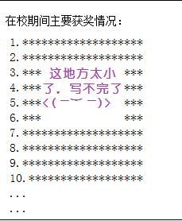
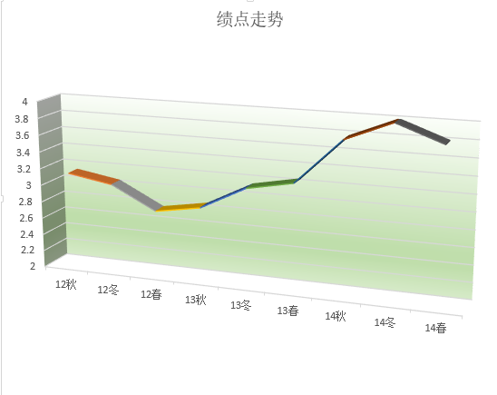

第20个生日
趁着这个大好的日子，总结一下自己这一年的收获。
Created by
赵明辉
Contents
一、总述
二、详细
三、总结
一、总述
用两张简单的图片描述下我一年来的变化

详述
成绩方面
参加比赛
政治方面
技能方面
成绩方面
学期
绩点
12秋
3.132
12冬
3.043
12春
2.772
13秋
2.864
13冬
3.140
13春
3.246
14秋
3.775
14冬
4.000
14春
3.803

大学前两年从来没有上过3.25，大三爆发了，三个学期都还不错，还考了一次4.0
参加比赛
第五届全国电子商务“创新、创意、创意”挑战赛上海赛区三等奖
The end